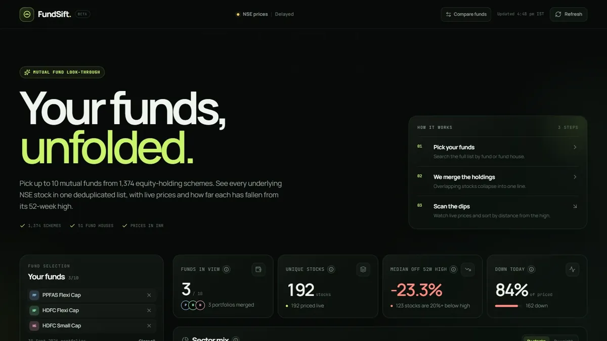
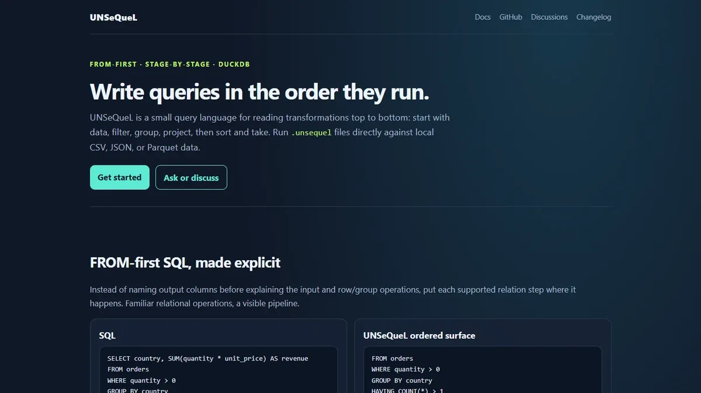

Intro
I'm a data engineer and analyst with 2+ years at Eli Lilly, building analytics products end to end — the pipelines, the governance, and the interfaces people actually use. I work at the intersection of engineering and product: I can write the pipeline in the morning and explain the insight to a VP in the afternoon.
My favorite problems are the unglamorous ones: manual processes that should be automated, schemas that need governing, and questions that should be answered in seconds instead of days. I build tools that remove repetitive work instead of adding another dashboard nobody opens.
Toolkit: Python · SQL · Databricks · Delta Lake · Power BI · Flask · Streamlit · LLMs · RAG
Outside work, I build and ship independent projects to keep expanding my knowledge base — the newest ones are in Projects. If you're building something where data needs to do more than sit in a report, let's talk.
Experience
Eli Lilly and Company
Bengaluru, India · Jan 2024 – Present
Consultant – Data Engineering Dec 2025 – Present
- Built and deployed a Python/Streamlit DDL governance application using sqlglot to parse, normalize, validate, and auto-remediate SQL schemas against Databricks and Unity Catalog standards — adopted by 20+ engineers and 60+ analytics professionals, reducing table standardization from 30 minutes to 3 seconds.
- Own end-to-end maintenance of production pipelines processing roughly 5 billion records across 10+ data products; orchestrate with Prefect and Databricks Jobs and deploy across dev/QA/prod through GitHub Actions.
- Migrated legacy Redshift ETL pipelines to atomic MERGE-based Delta Lake loads, eliminating data integrity risks and improving deployment reliability.
- Engineered 11 Claude Code slash commands for a multi-agent DDL governance workflow with builder/reviewer stages, human-in-the-loop quality gates, automated pull request creation, and branch-promotion enforcement.
- Enabled 20+ teammates through code reviews, 15+ reusable Claude Code skills, and CI/CD, Databricks MCP, and GitHub Actions setup; recognized at the Town Hall for tooling foundational to Eli Lilly's AI-ready Data Engineering initiative.
Associate – BI&A Product Analytics Jan 2025 – Dec 2025
- Automated 85% of a manual weekly targeting workflow for US-based stakeholders by redesigning interactive dashboards with parameterized SQL; cut report generation from 8 hours to under 15 minutes.
- Shipped four analytics products ahead of schedule, each used weekly by 30+ stakeholders; the Product Hub design was adopted as a template by other BI&A teams.
- Built Flask-based full-stack applications and reusable Python data frameworks that cut time-to-insight by 60% and reduced HCP support tickets by 40% through embedded AI chatbots.
- Earned Quarterly MVP recognition for product delivery, cross-team collaboration, and technical upskilling.
Associate – BI&A Neuroscience Analytics Jul 2024 – Dec 2024
- Built a full-stack self-service analytics application with Flask, PostgreSQL, and Power BI for 40+ neuroscience researchers, eliminating a custom report backlog and enabling on-demand data visualization.
- Deployed three therapeutic-area chatbots with embedded knowledge bases, handling 60%+ of repetitive queries.
- Standardized recurring analytics across neuroscience and immunology teams with reusable SQL and Python templates, reducing time-to-insight by 50%.
Intern – BI&A Immunology Analytics Jan 2024 – Jul 2024
- Segmented 60,000+ healthcare professionals using clustering and behavioral analysis, improving engagement conversion by 28% across three therapeutic programs.
- Replaced manual reports with parameterized Power BI dashboards, cutting report generation time by 70% and improving analytics reliability from 82% to 96% through a structured data maturity assessment.
Skills
Data Engineering
Python · SQL · ETL · Data modeling · Databricks · Delta Lake · Unity Catalog · Amazon Redshift · PostgreSQL · Prefect · GitHub Actions
Analytics & BI
Power BI · pandas · NumPy · Matplotlib · KPI reporting · Data visualization · Automated reporting
Applications & AI
Flask · FastAPI · Streamlit · LLMs · RAG · Claude Code · NLP
Product & Delivery
Product analytics · Requirements gathering · Stakeholder management · Cross-functional collaboration · Agile · JIRA
Education
Manipal Institute of Technology
Manipal, India
B.Tech in Data Science and Engineering · GPA: 8.27 / 10
2020 – 2024
Projects
The day job stays behind the firewall. These are the projects I build in public to expand my knowledge base — each one an excuse to learn a new part of the stack end to end.

FundSift
A look-through dashboard for Indian equity mutual funds. Pick up to 10 schemes and FundSift merges their portfolios into one deduplicated list of NSE stocks — live prices, daily moves, drawdown from 52-week highs, sector mix, and fund overlap across 1,374 schemes.
Live app

UNSeQueL
An open-source, FROM-first query language for writing SQL-like transformations in execution order. It runs .unsequel files against CSV, JSON, or Parquet data, with stage-by-stage previews, a REPL, and a VS Code extension. Two implementations share the same grammar: a Python prototype and a TypeScript compiler targeting DuckDB.
Project site
GitHub
AI Tutor
An earlier project: a GPT-3.5-powered teaching assistant that generates practice questions and explanations across machine-learning topics, built with Python and the OpenAI API. Apr – Sep 2023
GitHub
Most of my recent work lives inside Eli Lilly's internal systems, so it stays off this page. The impact is documented in my experience and resume. More experiments on GitHub.
Contact
Prefer email? aryamananand5@gmail.com. Otherwise, send a note below.